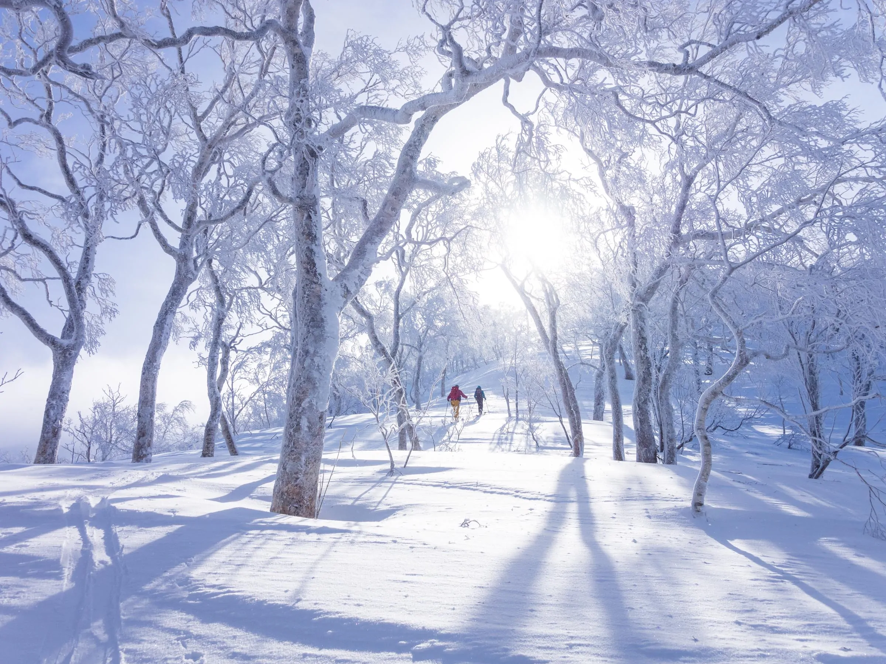
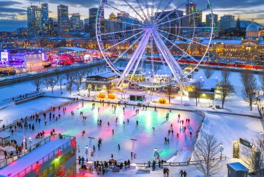

Explore winter in Czech Republic, China, Poland, Italy, Canada, and South Korea, where cities and
mountains are covered in snow and everything feels calm and beautiful.
You can walk through old streets, try local food, enjoy winter festivals, or go skiing in popular
resorts.
Each place has its own charm, whether you want adventure or just a quiet, cozy trip. It’s a great choice
for anyone looking to enjoy simple and memorable winter experiences.
This video showcases the beauty of winter in cities like Quebec, Harbin, Zakopane, Cortina d’Ampezzo, Lapland, and Pyeongchang. Experience the magic of snow-covered landscapes, vibrant winter festivals, and thrilling winter
Best Snow Time
- Quebec-January
- Herbin-December
- Lapland-December
- Pyeongchnag-Febuary
- Zakpane-January
- Cortina d’Ampezzo-November

City: Quebec
AED: 3,000

City: Herbin
AED: 4,000

City: Cortina d’Ampezzo
AED: 3,500

City: Zakopane
AED: 3,800

City: Lapland
AED: 4,500

City:Pyeongchang
AED: 4,200